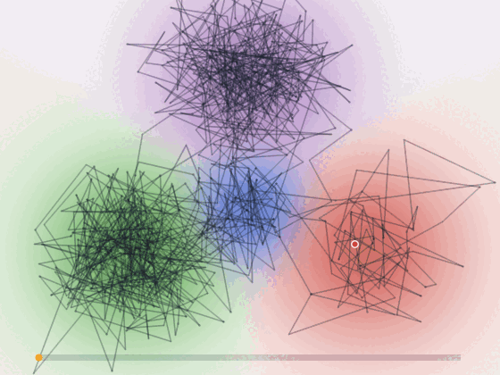

ParallelMCMC.jl
ParallelMCMC.jl parallelizes Markov chain Monte Carlo (MCMC) within a single chain. Its main sampler, ParallelMALASampler, draws the random numbers for a block of MALA transitions in advance (so the block becomes a deterministic recursion). It then solves for all states in the block at once with DEER, a Newton method whose linear solves are parallel scans. Running several chains at once also works, but it is experimental (see Run several chains).
Parallel MALA does more total work than sequential MALA, so it finishes sooner only when the hardware can run that work in parallel. In practice that means using a GPU such as an L40S or H100. On the CPU, the DEER solve runs on a single thread, so expect speedups there only if a batched log density hands most of the work to multithreaded BLAS. The speedup depends on the target, the block length T, the AD backend, and the hardware.

DEER on a synthetic posterior shaped like the Julia logo. The orange points are DEER's guess for every state in a block of MALA transitions. Over the iterations they settle onto the faint path, which sequential MALA produces from the same random numbers.
Which sampler to use
| If you want to... | Start with... |
|---|---|
| Try the parallel-across-sequence algorithm | ParallelMALASampler |
| Tune a step size automatically | AdaptiveMALASampler |
| Check a model against ordinary sequential MALA | MALASampler |
| Run a large, batch-friendly target on a GPU | GPU execution |
Install
ParallelMCMC supports Julia 1.10 and later.
pkg> add ParallelMCMCParallelMCMC has no hard dependency on any AD or GPU package, so you only need to load the ones your model needs, if any at all. The example below writes its derivatives by hand and needs only ParallelMCMC.
A complete first run
The target is a two-dimensional standard normal, $\log p(x) = -\tfrac{1}{2}\|x\|^2$. MALA uses its gradient, $\nabla \log p(x) = -x$, to propose each move. DEER also needs the derivative of each MALA transition, which involves the Hessian $\nabla^2 \log p(x)$. It never builds the Hessian, though, and only multiplies it by probe vectors. So instead of a Hessian, the model takes a Hessian-vector product (HVP) hvp(x, v), which returns $\nabla^2 \log p(x)\, v$ for whatever vector $v$ the sampler passes in. The Hessian of a standard normal is $-I$ at every $x$, so the HVP is just $-v$.
using ParallelMCMC, Random
logdensity(x) = -sum(abs2, x) / 2
gradient(x) = -x
hvp(x, v) = -v
model = DensityModel(logdensity, gradient, 2; hvp=hvp, param_names=[:x1, :x2])
sampler = ParallelMALASampler(0.5; T=64)
chain = sample(MersenneTwister(42), model, sampler, 1_000; initial_params=zeros(2))╭─FlexiChain (1000 iterations, 1 chain) ───────────────────────────────────────╮
│ ↓ iter = 1:1000 │
│ → chain = 1:1 │
│ │
│ Parameters (2) ── VarNames.VarName │
│ Float64 x1, x2 │
│ │
│ Extras (1) │
│ Float64 logp │
╰──────────────────────────────────────────────────────────────────────────────╯0.5 is the MALA step size, and T=64 makes DEER solve 64 transitions at a time. T does not change the length of the chain: sample still returns 1,000 samples. The draws should have a mean near 0 and a standard deviation near 1:
using Statistics
mean(chain[:x1]), std(chain[:x1])(-0.05709452169061722, 1.0124091718562638)When the derivatives are tedious to write by hand, an AD backend can compute the gradient and the HVP instead; see Defining models.
Where to go next
- Getting started walks through step-size tuning, running parallel MALA, and reading the result.
- Defining models covers hand-written derivatives, automatic differentiation, batched functions, parameter names, and LogDensityProblems models.
- GPU execution explains when a GPU is worthwhile and shows a complete logistic-regression example.
- Troubleshooting covers common errors and failure modes.
- How the algorithm works develops the DEER update and the diagonal parallel scan.
- API reference lists constructors and low-level building blocks.
Citation
The parallel-across-sequence method is described in:
Zoltowski, D. M., Wu, S., Gonzalez, X., Kozachkov, L., & Linderman, S. W. (2025). Parallelizing MCMC Across the Sequence Length. NeurIPS 2025. arXiv:2508.18413
If you use ParallelMCMC.jl in published work, please use the package citation in CITATION.cff.